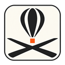

TargetNav
BALLOON COMPETITION NAVIGATION
Plan
Görevler
0
Görev föyü
Rüzgâr
GPS
Katmanlar
?
● Yerel kayıt hazır
Uçuş kaydı
Uçuş görünümü
QNH
Harita görünümü
Altlık harita
Harita
Uydu
Topo
Çevrimdışı
Yarışma katmanları
+
−
N
↑
4/4 KOORDİNATI
Aktif hedef yap
Düzenle
Sil
×
Değer gir
Tamamla
×
0,0 m
Gidiş
—
Geliş
—
Gerçek kuzey
AKTİF HEDEF
×
MESAFE
—
YÖN
—
Hareket çizgisi
Kapalı
1 dk
3 dk
5 dk
Hedef
Kalkış
Çember
Çizgi
Mesafe
GPS DURUMU
GPS kapalı
YER HIZI
—
km/sa
HAREKET YÖNÜ
—
°T
GPS İRTİFASI · m
—
m
HEDEFE MESAFE
—
m
HEDEFE YÖN
—
°T
WGS84 · gerçek kuzey
Canlı konum değil · GPS'i açın
☰ Uçuş planı
TargetNav
×